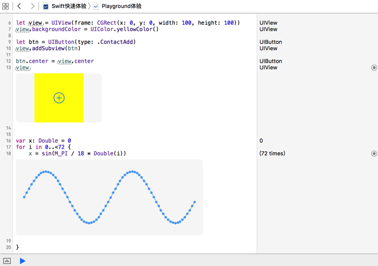

Playground

- Playground 是 Xcde 6 推出的新功能
- 创建工程编写和运行程序，目的是为了编译和发布程序
- 而使用 Playground 的目的是为了：
- 学习代码
- 实验代码
- 测试代码
- 并且能够可视化地看到运行结果
- 另外，使用 Playground 只需要一个文件，而不需要创建一个复杂的工程
快速体验
let btn = UIButton(type: UIButtonType.ContactAdd)
let view = UIView(frame: CGRect(x: 0, y: 0, width: 100, height: 100))
view.backgroundColor = UIColor.lightGrayColor()
btn.center = view.center
view.addSubview(btn)
print(view)
print(view.subviews)
提示
- 官方提供的一些学习资源是以
playground的形式提供的 - 建立一个属于自己的
playgound文件，能够在每次版本升级时，第一时间发现语法的变化